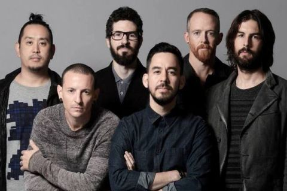

Історія
Гурт заснували 1996 року троє однокласників: Майк Шинода, Бред Делсон і Роб Бурдон під назвою «Xero0», а пізніше — «Hybrid Theory» (Гібридна теорія). Майк Шинода познайомився з dj-єм Джозефом Ханом, коли навчався в Art Center College, м. Пасадені. Ган згодом став dj-єм гурту. Бред Делсон познайомився з майбутнім басистом гурту, Феніксом, який покинув колектив після закінчення коледжу й повернувся аж через рік. Вокалістом запросили Марка Вейкфільда, але він незабаром покинув гурт у пошуках інших проектів. Новим вокалістом став Честер Беннінгтон, корінний арізонець, що дав музикантам прослухати свої записи по телефону. Честер також придумав гурту нову назву «Linkin Park», що з'явилася під впливом Lincoln Park (парк імені Лінкольна в місті Санта-Моніці).
Виступи в Україні
Єдиний концерт в Україні гурт дав 12 червня 2012 року у місті Одеса в рамках фестивалю PROSTO ROCK
- Роберт Бурдон
- Бред Делсон
- Девід Фаррел
- Джо Хан
- Майк Шинода
- Честер Беннінгтон
Смерть Честера Беннінґтона. Пауза
20 липня 2017 року вокаліст і фронтмен групи Честер Беннінґтон
покінчив життя самогубством у своєму будинку в передмісті
Лос-Анджелеса у віці 41 року[9]. Першим про це повідомив таблоїд
TMZ[10]. Через деякий час Майк Шинода підтвердив смерть Честера[11]:
«Я шокований, моє серце розбите, але це правда. Офіційна заява буде
зроблена, як тільки буде можливість». Оригінальний текст (англ.) —
Mike Shinoda Честер Беннінґтон наклав на себе руки в день народження
свого близького друга Кріса Корнелла, фронтмена гурту Soundgarden,
який також вдався до самогубства двома місяцями раніше, таким же
способом — через повішення. У спальні Беннінґтона знайшли недопиту
пляшку алкоголю, ніякої передсмертної записки він не залишив[12].
Смерть Честера стала повною несподіванкою для членів групи, в цей день
вони планували провести фотосесію, а через тиждень відправитися в
тур[13]. Лише через декілька годин після смерті вокаліста на
офіційному каналі Linkin Park в Youtube був опублікований відеокліп до
синглу «Talking to Myself»[14]. За перші 24 години відео зібрало понад
12 мільйонів переглядів, а станом на 25 липня — 30 мільйонів.
Наступного дня після смерті Беннінґтона група скасувала
північноамериканську частину свого турне One More Light Tour[15].
Безліч музикантів, друзів і колег Честера виступили зі словами
підтримки на адресу групи і сім'ї. Також на офіційному сайті групи
було опубліковано послання Честеру від групи.
28 липня Шинода повідомив, що пожертвування, зібрані благодійним
фондом Music for Relief, будуть перенаправлені в фонд One More Light,
який був створений в пам'ять Беннінгтона[16]. 4 серпня, в день коли
група повинна була виступити на шоу «Good Morning America»,
тринадцятирічна дочка Кріса Корнелла, Тоні (яка також є хрещеницею
Беннінгтона) з'явилася разом з OneRepublic, виконавши «Hallelujah»,
віддавши данину пам'яті Беннінґтона і своєму батькові[17]. Раніше цю
пісню виконував сам Беннінґтон на похоронах Корнелла. 22 серпня Linkin
Park оголосили про плани провести публічний захід в Лос-Анджелесі в
честь Беннінґтона. Група подякувала шанувальникам за їх підтримку,
прокоментувавши наступне: «Вся наша п'ятірка від душі вдячна за вашу
підтримку, поки ми лікуємо цю рану і будуємо майбутнє Linkin Park».
Пізніше група підтвердила, що концерт відбудеться 27 жовтня в
«Голлівуд-боул». Це було першим виступом Linkin Park після смерті
Беннінґтона. Разом з Linkin Park на цьому триб'ют-концерті взяли
участь Blink-182 і музиканти груп System of a Down, Korn, Avenged
Sevenfold, Bring Me the Horizon, Yellowcard, Sum 41, а також співачка
Kiiara. Назва концерту — Linkin Park and Friends — Celebrate Life in
Honor of Chester Bennington. Концерт тривав більше трьох
годин і транслювався в прямому ефірі через YouTube[18].
12 жовтня в мережі був опублікований випуск передачі «Carpool Karaoke»
за участю Майка, Джо і Честера[19]. Відео було знято 14 липня за шість
днів до смерті Честера. Учасники шоу їхали в машині і співали свої і
чужі пісні. Серед композицій, які виконали учасники Linkin Park, були
їхні пісні «Numb», «In the End» і «Talking to Myself», а також пісня
«Under the Bridge» групи Red Hot Chili Peppers і «Hey Ya» групи
Outkast. Ведучим був актор Кен Джонг. Після смерті Честера творець
шоу, Джеймс Корден, заявив, що відео буде випущено тільки за згодою
сім'ї музиканта і учасників групи. 5 жовтня вдова музиканта, Талінда
Беннінґтон, підтвердила, що випуск буде опублікований в пам'ять про
Честера[20]. У листопаді 2017 року група анонсувала вихід концертного
альбому One More Light: Live, в основу якого лягли записи останнього
туру з Беннінґтоном. Його реліз відбувся 15 грудня 2017 року[21]. 19
листопада Linkin Park отримали премію American Music Awards в
номінації «Найкращий артист в жанрі альтернативний рок» і присвятили
її Беннінґтону[22]. Під час живого чату в Instagram 17 грудня 2017
року Шиноду запитали, чи буде Linkin Park в майбутньому виступати з
голограмою Беннінгтона. Він відповів: «Може, не будемо робити
голографічного Честера? У мене навіть в голові не вкладається
голографічний Честер. Правда, я чув, як люди, що не мають відношення
до групи, припускають таке, але ж це абсолютно виключено. Як я можу,
блін, взагалі до такого звикнути?»[23]. 28 січня 2018 Майк відповідав
на питання в Твіттері. Один користувач запитав: «Майк, що буде з
Linkin Park в майбутньому?». Шинода відповів: «У мене є всі бажання
продовжити роботу з LP, і хлопці відчувають те ж саме. У нас є плани
на перебудову, які потрібно виконати, і питання, на які потрібно
відповісти, тому потрібен час»[24]. 17 квітня 2018 року Linkin Park
були номіновані на премію Billboard Music Awards 2018 року, поряд з
Guns N 'Roses, Panic! at the Disco і Twenty One Pilots[25]. 18 травня
2018 року група була нагороджена премією імені Джорджа і Айри Гершвін
за музичні досягнення в Каліфорнійському університеті в
Лос-Анджелесі[26]. 18 лютого 2019 року Шинода в інтерв'ю сказав, що
група розглядає продовження своєї діяльності, але ще не вирішено, в
якому форматі. Він заявив: «Я знаю інших [членів групи] — вони люблять
виступати на сцені, люблять працювати в студії, і не робити всього
цього було б — я навіть не знаю — як-то нездорово, чи що». Коли його
запитали про майбутнє групи без Честера, Шинода прокоментував: «Я не
ставлю перед собою мету шукати нового вокаліста. Якщо це і трапиться,
то це повинно статися природно. Якщо ми знайдемо когось, хто буде
хорошою людиною і підійде стилем, я можу уявити, що ми спробуємо
працювати з кимось ще. Я б ніколи не хотів відчути, немов ми замінюємо
Честера»[27]. У період між смертю Беннінґтона і 2020 роком група
перебувала в «невизначеній перерві»[28]. 28 квітня 2020 року басист
Дейв Фаррелл повідомив, що група працює над новою музикою[29]